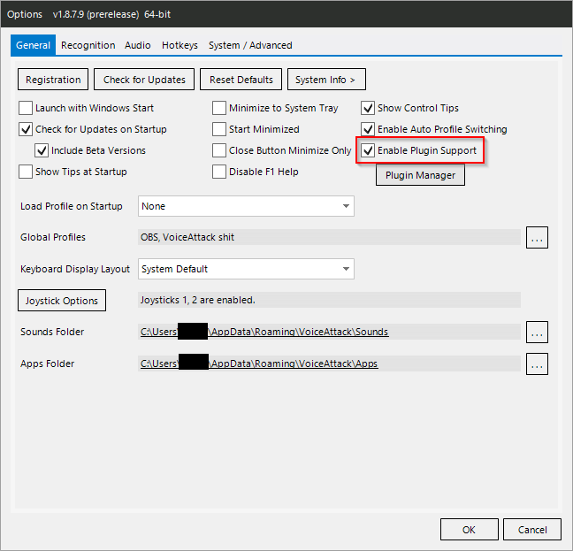
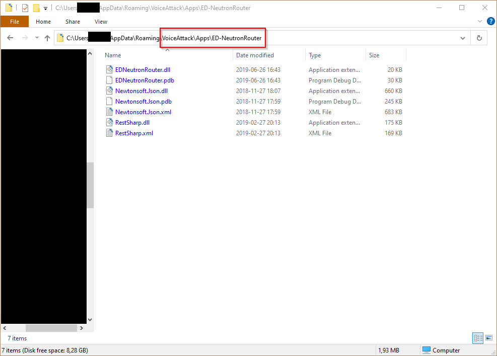
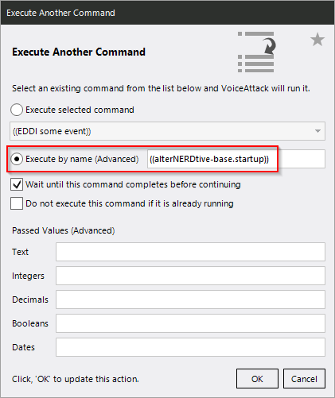

Installing¶
Install VoiceAttack¶
Grab the most recent VoiceAttack beta version off the official site and install it. Right now 32bit vs. 64bit does not make any difference, but there is no reason not to choose 64bit unless you are running a 32bit version of Windows (is that even still a thing?).
If you are using the standalone version you should probably download the executable installer. If you are using the Steam version of VoiceAttack, you will have to download the zipped folder and replace your installed version with its contents.
Here is the first hit on a Google search for finding the installation folder. It is for a completely unrelated game, but the steps are the same.
You can potentially also install the latest non-beta version; but I often use features that have only just been added to the beta, so some things might break for you if you are not using that.
Make sure you have plugin support enabled:
- Go to VoiceAttack settings.
- Check “enable plugin support”. 
While you are there, you might also want to enable the automatic update checks.
Install EDDI¶
Install the latest release from
Github (The EDDI-X.Y.Z.exe under “Assets”). You will need to install it as a
VoiceAttack
plugin.
If you do not want to install it into the VoiceAttack installation folder (or
already have it installed somewhere else) you can also just create a symbolic
link. Open a CMD prompt (Windows key + R, enter “cmd”, hit Enter) and do
>cd x:\path\to\VoiceAttack\Apps
>mklink /J EDDI x:\path\to\EDDI
If you have installed the non-Steam version of VoiceAttack to the default folder
within “ProgramFiles” you will have to run the CMD prompt as admin (Windows key
+ R, enter “cmd”, hit Control + Shift + Enter).
Install ED-NeutronRouter¶
Make sure to grab the pre-release
1.02 since
1.01 has a bug with a hardcoded 50 ly jump range (the
EDNeutronRouter.vX.YZ.zip under “Assets”).
You will have to extract the contents of the release .zip file to your VoiceAttack Apps folder:
- Go into VoiceAttack settings.
- Click the folder set as “Apps Folder”.
Now extract the contents of the downloaded file into there. Make sure that they are not naked files under “Apps”, but have their own folder “Apps\ED-NeutronRouter”! The exact folder name does not matter as long as they are in a subfolder. Otherwise the plugin will not load.

Leave the “Apps” folder open in Windows Explorer, you will need it for the next step.
Import Profiles Package¶
Acquire the latest
release
from Github (the alterNERDtive-voiceattack-profiles.vax file under “Assets”).
- Go into VoiceAttack settings.
- Click the folder set as “Apps Folder”.
- Create a sub folder named “Import” if it does not exist yet.
- Drop the downloaded .vax file into the “Import” folder.
- Restart VoiceAttack.
- When prompted, import the profile package. VoiceAttack will restart when completed.
Create a Custom Profile¶
Last but not least you are going to create your own custom VoiceAttack profile for Elite. It will allow you to add your own commands, override any commands in the profiles that you want to change and add voice triggers or hotkeys.
You can either use an existing profile, create a new one or use the provided profile example as a basis. Regardless of which way you choose, make sure to read the #Import Profiles section and follow the instructions there!
Create a New Profile¶
- Click the “Profile Actions” button, then “Create New Profile”.
- Give it a name and add some commands if you want to.
- Hit “Done” to create the new profile.
Use the Profile Example¶
- Click the “Profile Actions” button, then “Import Profile”.

- Navigate to your VoiceAttack Apps folder (see above), go into the “alterNERDtive” subfolder, choose the profile example and hit “Open”.
Once you are done with the setup and configuration process, you can find a bunch of example commands with comments on how to do things in this profile. Make sure to also rename it to something more exciting than “Custom Profile Example”!
Include Profiles¶
In order to use my profiles with your custom profile, you will need to take two additional steps:
- Include the profiles in your custom profiles. That will make all commands available when your custom profile is active.
- Create a startup command for your custom profile. You can use it to do anything you want when your profile loads, but it will also have to run the startup command for my profiles.
Create a Startup Command¶
First off, hit the “Edit” button in VoiceAttack.
If you are using your existing profile (or have just created a fresh one) you will now have to create the startup command. Hit the “New Command” button.
You can name it anything you want but I recommend calling it “startup” or similar, and to deactivate the “when i say”checkbox in the command options to make sure you do not accidentally run it via voice.
Add a new action using “Other” → “VoiceAttack Action”→ “Execute Another Command”.
Choose “Execute by name (Advanced)” and enter ((alterNERDtive-base.startup)).

Make sure to leave “Wait until this command completes before continuing” on and have this action at the top of the action list for the command. That way you can be sure that my profiles are initialized properly before your personal startup actions are processed.
You can add anything else you want your profile to do when it loads below this action. You do not have to set any configuration options, this can be done way more elegantly! More on this later on.
Set Profile Options¶
While editing the profile, hit the “Options” button.
On the section labeled “Include commands from other profiles”, hit the “…” button.
Add all my profiles (“alterNERDtive-base”, “EliteDangerous”, “RatAttack”, “SpanshAttack”,“StreamAttack”).
Technically you can leave out anything you are not planning on using. Practically it probably will not hurt you to just include everything, and it will then available for you in the future if you choose to check it out! Make sure that “alterNERDtive-base” is on top of the list, the order of the others does not matter. But I like it nice and alphabetical …
Now switch to the “Profile Exec” tab. Tick the “Execute a command each time this profile is loaded” checkbox, and select the “startup” command you have created earlier.
Set Elite Keyboard Binds¶
You need to have keyboard binds setup at least as secondary bindings in Elite’s controls options. VoiceAttack cannot “push” joystick buttons for you, it can only do keyboard inputs. Hence its only way to interact with Elite is through keyboard emulation, even if you otherwise play the game with a controller or HOTAS. Or racing wheel. Or Rock Band set. Or bananas.

Should you use a keyboard layout that is not en-US QWERTY, some keys might not
work out of the box. You can try telling bindED about your keyboard layout by
setting the bindED.layout# variable (including the #!) to something more
appropriate in your startup command.
Currently bindED supports the en-US, en-GB and de-Neo2 layouts. You can
find instructions on how to add your own on
Github.